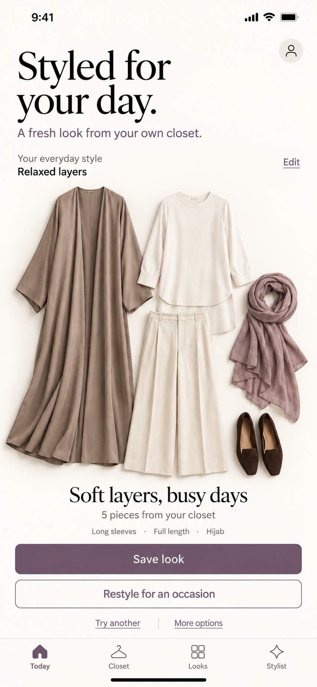
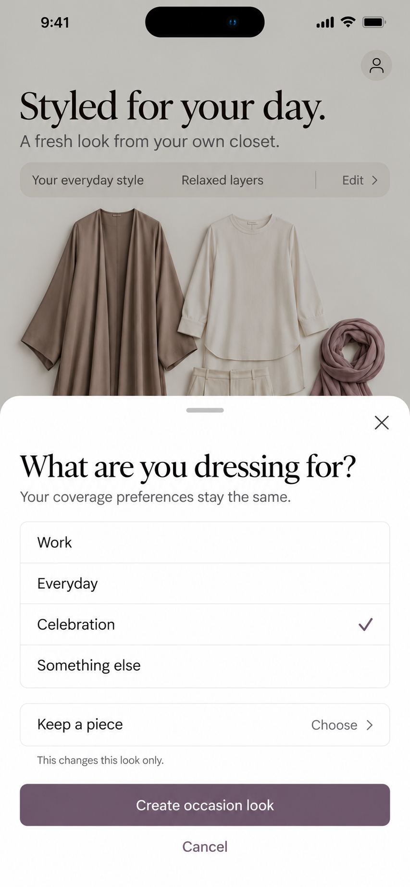
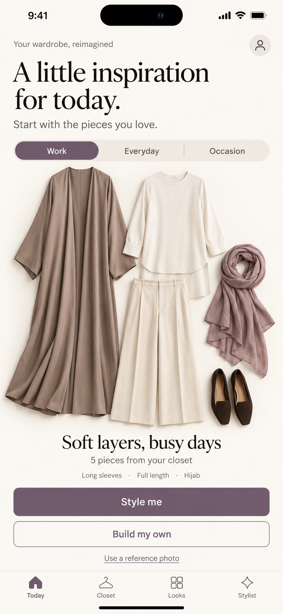
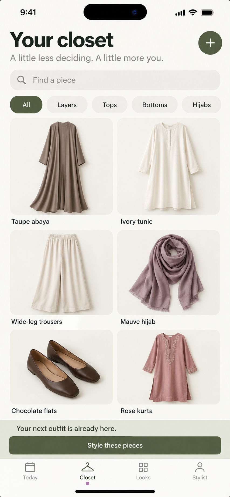
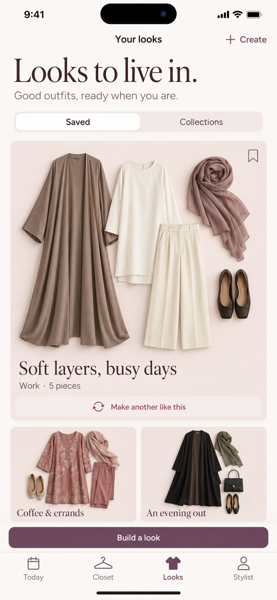

Your daily outfit


An outfit based on your everyday style.
Proposed: a fresh suggestion on first opening each day, kept until you choose another. The style name and clothes are illustrative.
Direction A is selected. A light canvas keeps your clothes in focus. These refinements explore a daily outfit and restyling for an occasion.

An outfit based on your everyday style.
Proposed: a fresh suggestion on first opening each day, kept until you choose another. The style name and clothes are illustrative.

A different occasion, with your preferences.
Proposed: keep a favorite piece, preserve coverage, and change this look without changing your everyday default.

A warm, personal start to getting dressed.
Outfits take the lead. Larger imagery and editorial type create a calmer, less dense screen.

An organized home for every piece.
Search and clothing stay easy to scan. The most practical direction, with a quieter personality.

Favorite looks, with a softer touch.
Rose surfaces and saved combinations feel expressive. More visual detail needs restraint on small screens.